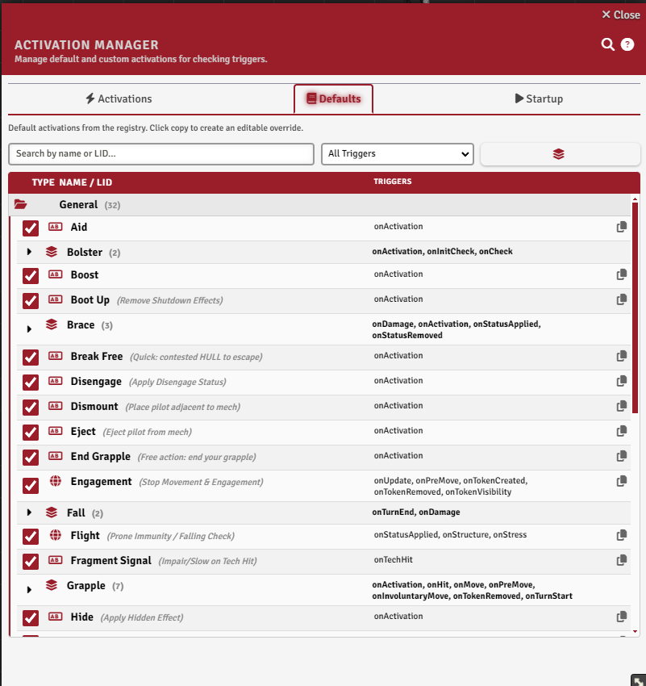
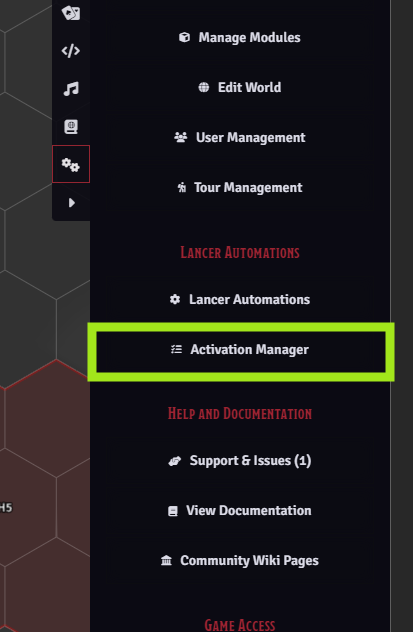
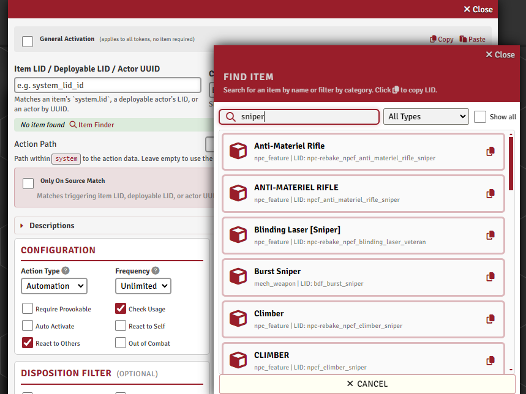
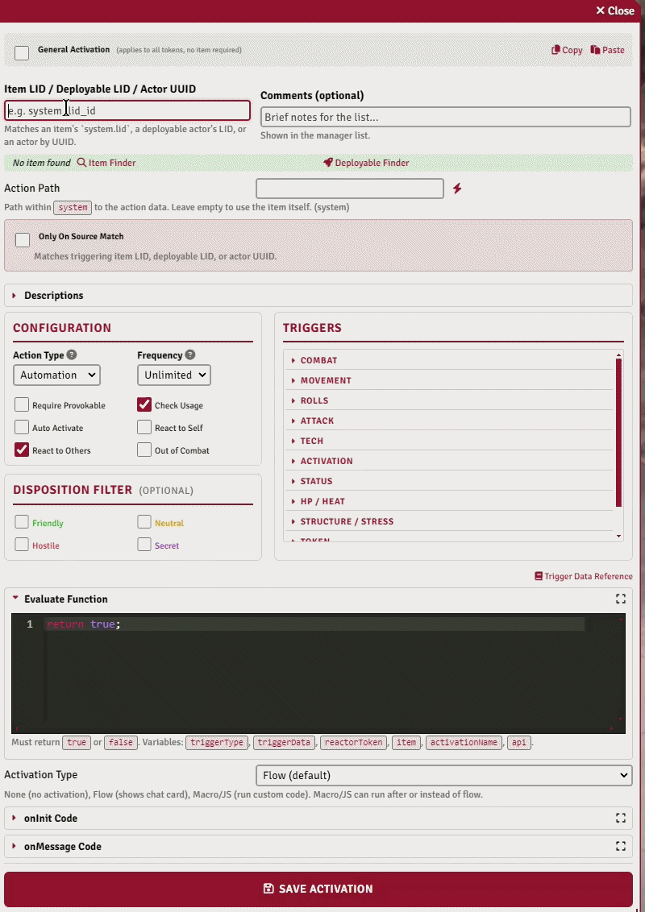
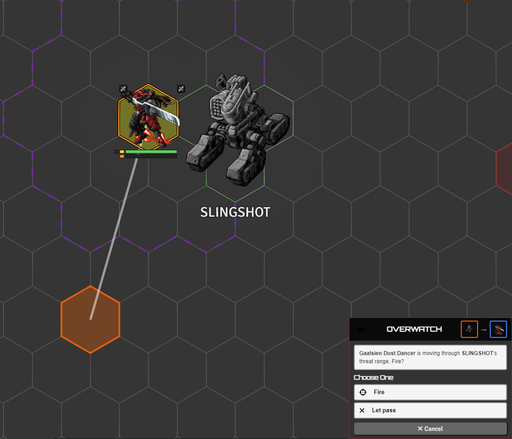
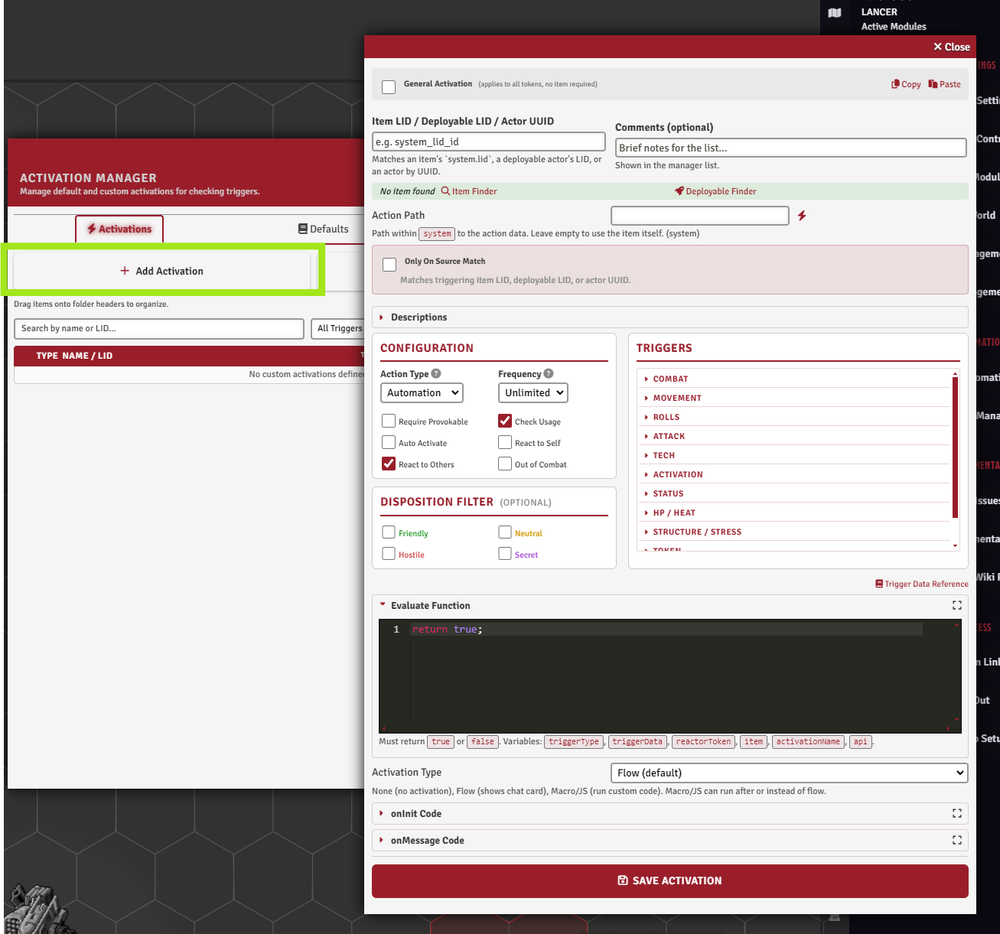
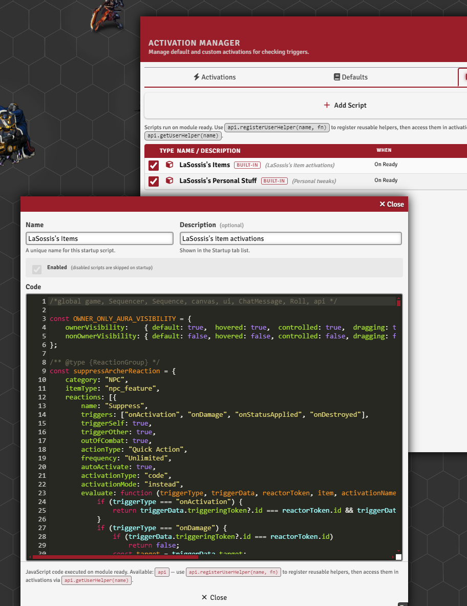
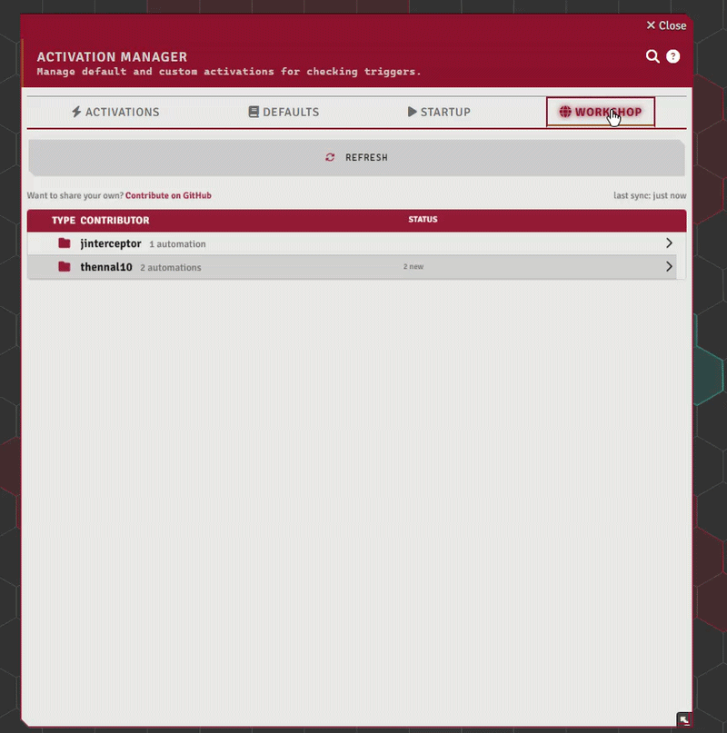
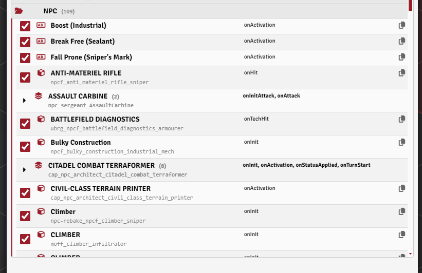

Automation Engine¶
← Back to the README · Engine internals: AUTOMATION_SYSTEM.md · API: API_REFERENCE.md

Automate almost any Lancer action.
Engine internals (full trigger list, evaluate / activation / onInit callbacks, cancel and modify, client and socket execution) are in AUTOMATION_SYSTEM.md.
What's automated by default¶
Lancer Automations provides basic automation for most of the game's base actions. There's no ready-made automation for specific NPC or mech items yet. For those, it's up to you to build your own, and the Activation Manager is where you do it.
The Activation Manager¶

Register, modify, and copy automations. Open it from the Lancer Automations settings.
It has two kinds of entries:
- Item-based automations are tied to a Lancer item by its LID. Only tokens that own that item can react. You can also bind one to a deployable LID, or to a specific Actor UUID, so it reacts only as that one exact actor instead of every actor with the item.
- General automations aren't tied to any item. Any token in the scene can react, filtered by the rules you set.
Entries can be sorted into named folders, and there's a Startup Scripts tab, covered further down.
Each activation has an enable / disable toggle. It works per sub-reaction on a multi-reaction item, and on the built-in and personal-set automations too (the toggle is saved as your own override, so disabling a built-in one sticks).
Changing a built-in automation¶
You can't edit a built-in directly. Three ways around it:
| Want | Do |
|---|---|
| Turn it off | The enable toggle. Saved, so updates don't undo it. |
| Change it | Edit it. Your version is saved over the default. |
| Make a variant | Copy to Custom (copy icon on the row). Makes an editable copy and opens it. The original stays. |
To replace a built-in: copy it, edit the copy, disable the original.
All of this is saved in your world, not the module, so updates never overwrite it. Export / Import moves it to another world.
Finding an item's LID¶

Item-based automations need the item's LID. The LID finder on the Item tab browses your world and compendium items so you can search and copy a LID, and see the action paths inside it. A deployable can be set to react to its own deploy (the onDeploy trigger), covered in AUTOMATION_SYSTEM.md.
Configuring an activation¶

Each activation is a small form. The main fields:
| Group | What you set |
|---|---|
| Triggers | Which game events fire it (onMove, onHit, onActivation, onDeploy, and many more). Full list in AUTOMATION_SYSTEM.md. |
| Mode | How it composes with the original action: instead of or after it, and whether it auto-activates silently (no popup). |
| Filters | Disposition (Friendly / Hostile / Neutral, plus Token Factions teams), trigger-self / trigger-other, only-on-source-match, require-can-provoke, and out-of-combat. |
| Binding | What the automation attaches to: an item LID, a deployable LID, or an Actor UUID, plus an action path to bind one sub-action, the action type shown in the popup (Reaction / Quick / Full / ...), and frequency. |
| Text | Override the trigger and effect descriptions shown in the popup. |
Example: react to your own activation¶
The smallest useful activation: run your own code when an item's action is used. Exported, a self-reacting onActivation looks like this (this one shows a notification):
{
"isGeneral": false,
"lid": "mf_balor_alt_hecatoncheires",
"name": "",
"reaction": {
"triggers": ["onActivation"],
"evaluate": "return true;",
"actionType": "Quick Action",
"frequency": "Unlimited",
"autoActivate": true,
"triggerSelf": true,
"triggerOther": false,
"outOfCombat": true,
"onlyOnSourceMatch": false,
"activationType": "code",
"activationMode": "instead",
"activationCode": "ui.notifications.info(\"The Action of this frame is activated\");",
"reactionPath": "core_system.passive_actions[0]"
}
}
What makes it self-react on use:
-
triggers: ["onActivation"]- fires when the item's action runs. -
triggerSelf: true(withtriggerOther: false) - the acting token is the reactor, so it reacts to its own action. There is alsotriggerTarget: true- the reactor is one of the event's targets (the one being attacked), usable with both others off for target-only reactions. -
autoActivate: true- runs silently, no popup. -
activationMode: "instead"- your code runs alone."after"also fires the reaction's own flow/card alongside it; neither touches the flow that triggered you. -
reactionPath: "core_system.passive_actions[0]"- binds to one specific action (here a frame's first core passive). Swap thelidandreactionPathfor your own item and action. DropreactionPathto bind the whole item.
How an activation runs¶

When a trigger fires and the filters pass, three pieces decide the outcome.
Activation type sets what runs: your own code, the item's normal flow, a macro, or none.
The evaluate function runs first, as a final check. Return true to go ahead, false to skip. Use it for conditions the filters can't express, like "only if the target is below half HP" or "only if the attacker is flying".
The activation code is the effect itself, run when the automation fires. It has access to the full api (apply effects, move tokens, place zones, show choice cards, etc.).
There's also an onInit block that runs once when a token is created, for passive setup like constant bonuses or auras.
You write these as plain function bodies, or full functions (the wrapper is stripped for you). The exact arguments each block receives, the order filters run in, and the synchronous rule for cancel and modify triggers are in AUTOMATION_SYSTEM.md.
By default onActivation fires when an item runs through an activation. treatGenericPrintAsActivation also fires it for items printed via Lancer's generic print.
Debugging what you get¶
Call triggerData.debugActivation() inside evaluate or activationCode to dump that call to the console: the trigger type, the reactor token, the item, the activation name, every field on triggerData, and the list of helper functions available for that specific trigger. Pass a label (debugActivation("before the check")) to name the group when you have several.
It returns the same information as an object, and it's also on the api as api.debugActivation(triggerType, triggerData, reactorToken, item, activationName, label).
This is the fastest way to find out what a trigger actually hands you instead of guessing from the docs.
The activation popup¶

When a trigger fires reactions that aren't set to auto-activate, they're collected into a popup, grouped by token. Click an entry to expand its detail panel (trigger text, effect, action type badge, frequency), then click Activate to run it.
- Who sees the popup depends on the
reactionNotificationModesetting: the token's owner, the GM, or both. - Right-click a reaction to open its source item's sheet.
- If more reactions trigger while a popup is open, a small pending badge shows how many are queued behind it.
Reaction economy¶
If consumeReaction is on, activating a reaction spends that token's reaction for the round. The popup shows the reaction as unavailable once it's spent.
Startup scripts¶

The Startup Scripts tab in the Activation Manager holds code that runs once when Foundry is ready, before play starts. The main use is registering helper functions with api.registerUserHelper, callable from any activation or macro.
The registration patterns are in API_HOWTO.md.
Sharing automations¶
Copy / Paste in the activation editor moves one activation. Export Pack / Import Pack in the Activation Manager moves a bundle of activations and startup scripts as la-pack-<name>.json, with a summary to pick what applies.
The Workshop is where people share those files. The Workshop tab in the Activation Manager browses and imports it directly; re-importing a file updates your copy instead of duplicating it.

The personal activation set¶
Module Settings has a toggle for my personal activation set (enableLaSossisItems): 30+ of my own item automations, with examples like Dispersal Shield, Marker Rifle, and Defense Net. Once enabled, they show in the Activation Manager under the default section.
[!NOTE] This is my own stuff, not part of the core module. It's literally the automations I built for my own games (my NPCs, my items), shared as-is. It isn't a complete or general library, and it won't automate your content. Treat it as a set of examples to learn from, not something to rely on.
The worked examples are walked through in NPC_EXAMPLES.md, and the patterns for registering your own automations from code are in API_HOWTO.md.
Some of these deployables aren't in any official LCP. If a personal activation spawns one that won't resolve, import the small companion pack that ships with the module: extra/LaSossis_Npc_Deployables.lcp.
